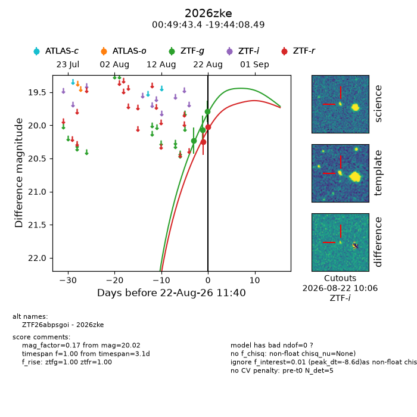
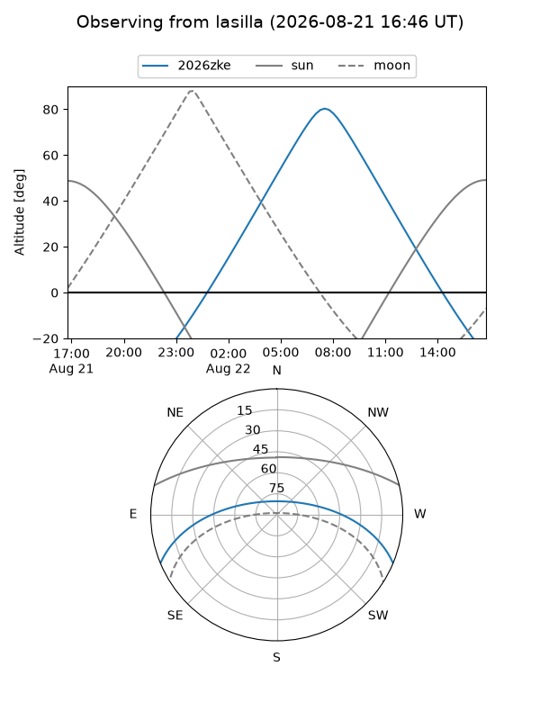
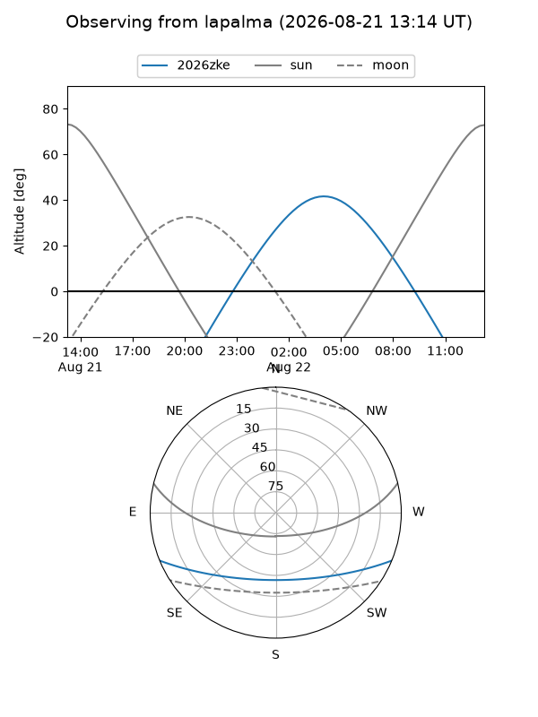
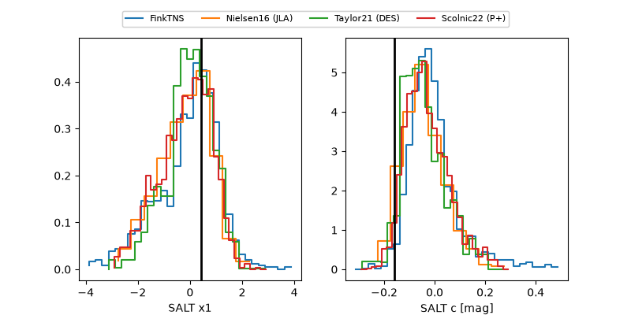

2026zke
Target 2026zke at 2026-08-22 11:43
Aliases and brokers:
FINK-ZTF: ztf.fink-portal.org/ZTF26abpsgoi
Lasair-ZTF: lasair-ztf.lsst.ac.uk/objects/ZTF26abpsgoi
ALeRCE-ZTF: alerce.online/object/ZTF26abpsgoi
YSE-PZ: ziggy.ucolick.org/yse/transient_detail/2026zke
TNS name: wis-tns.org/object/2026zke
Direct TNS query: direct search
alt names
ZTF26abpsgoi (ztf,fink_ztf)
2026zke (tns,yse)
Coordinates:
equatorial (ra, dec) = 12.4308,-19.73569
equatorial (HMS+DMS) = 00:49:43.39,-19:44:08.49
galactic (l, b) = (119.7987,-82.59700)
Flags:
TNS type: nan
peak dt: -8.6
Photometry:
last ztfg=19.79, ztfr=20.02
3 ztfg, 2 ztfr detections
Lightcurve

Visibility


Additional plots
